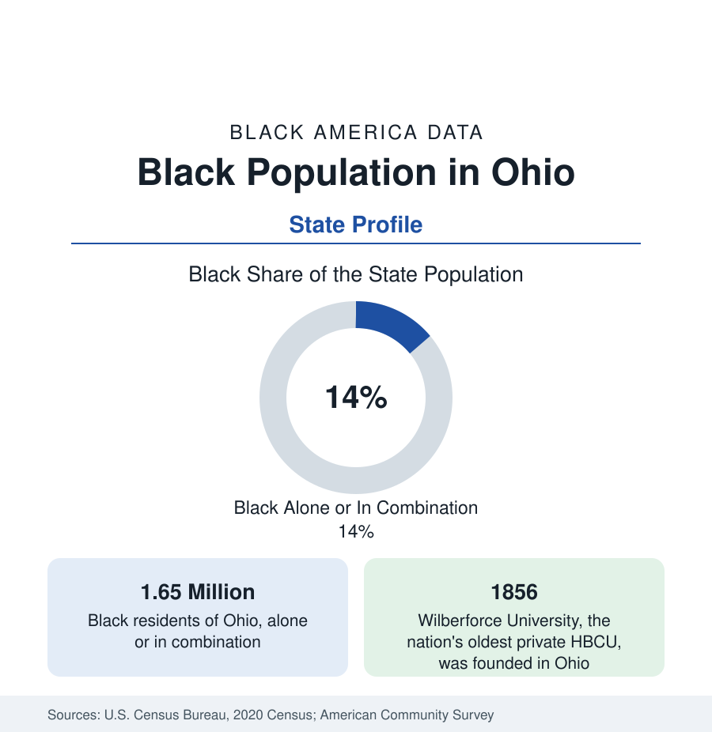

Black Census
Black Population in Ohio: The Lake and River Cities
About 1.65 million Black Ohioans — one in seven residents — across Cleveland, Cincinnati, Columbus, and the industrial cities of the lake and river.

Ohio holds about 1.65 million Black residents — Black alone or in combination — about one in seven of its people, with Black alone at about 1.5 million, or 13 percent. Ohio's Black population is the most evenly distributed of any large state's: no single metropolis dominates it. Cleveland, Cincinnati, and Columbus each hold Black populations in the hundreds of thousands, ringed by a belt of mid-sized industrial cities — Dayton, Toledo, Akron, Youngstown — each with large Black communities of its own. This article profiles the state population.
Three Metros, Three Histories
Cleveland, on Lake Erie, is very nearly half Black within the city — about 48 percent — the largest Black share of any major Ohio city, built by the Great Migration's steel and manufacturing waves into neighborhoods like Glenville and Mount Pleasant, and now suburbanized into the region's eastern ring. Cincinnati, on the Ohio River across from Kentucky, is roughly two-fifths Black, with an older history: a free Black community from the early nineteenth century in a border city that was both a slave-trade crossing and an Underground Railroad terminus. Columbus, the capital and the state's growth engine, is more than a quarter Black — the largest Black population count of the three cities on its booming metro's scale, and the most suburbanized, its Black middle class spread across the region's east side and suburbs. Three metros, three settlement structures, one state total.
The Industrial Belt
Between the metros stands the belt: Dayton, more than two-fifths Black, a manufacturing city whose Black community was built by the auto and appliance industries; Toledo, about a quarter Black, the lake port; Akron, roughly a quarter to a third Black, the rubber city; Youngstown, about two-fifths Black, whose steel collapse made it a national case in the industrial-decline literature; and Lorain, Canton, Lima, and Springfield behind them. These cities' data carry the familiar signature — Black populations holding or declining slowly in cities whose totals fell further, raising Black shares even as counts slipped — and their indicators, from income to health, record the industrial era's end more starkly than the three metros' do.
Wilberforce and the Education Layer
Ohio's contribution to Black education predates the HBCU system itself. Wilberforce University, founded in 1856 by the African Methodist Episcopal Church, is the nation's oldest private historically Black university; Central State University, its public neighbor in the same village, began as a Wilberforce department and became Ohio's public land-grant HBCU. The village of Wilberforce remains the only place in America where two HBCUs share one small town. Ohio's large public universities — Ohio State above all, with one of the largest Black enrollments of any flagship — and its urban publics in Cleveland, Cincinnati, Akron, and Toledo carry the bulk of the state's Black enrollment in the NCES data.
Composition and Change
Ohio's Black population is native-born in the main, its communities formed by the Kentucky and Virginia migrations up the river roads and the later industrial waves; Columbus adds the exception, one of the nation's significant Somali and African immigrant communities, layering a new Black population over the capital's east side. The estimates show the state pattern of the industrial Midwest: Black counts roughly stable statewide, growing in Columbus's suburbs, declining in the belt cities, shares rising almost everywhere as overall population growth concentrates in the capital region.
Reading the Ohio Numbers
Ohio's Black geography holds one more historic layer: the state's southern counties along the river were dotted with free Black settlements founded before the Civil War — some by families who purchased their own freedom, some by the manumitted heirs of Virginia planters — whose descendants and place names persist in the rural census tracts of Brown, Gallia, and Lawrence counties. The Oberlin community, founded around its college in the same era, became the North's most famous abolitionist town and educated Black students from the 1830s onward.
Ohio is the state profile that refuses a single-city summary: 1.65 million people distributed across three metros and a dozen industrial cities, no one of which holds even a fifth of the total. For researchers, it is the most representative large Black population in America — urban, industrial, native-born, Great Migration-descended — and its county and city tables beneath this account are the section's most-used reference set.
More in Black Census
The Black Population of the United States: Size, Definitions, and Distribution
The Black population of the United States totals 52.8 million — 15.4 percent of the nation. How the Census Bureau defines and counts the population, and where it lives.
Black Median Household Income in the United States
Black median household income stands at $56,490 in the Census Bureau's annual income report — how the figure is measured, how it compares, and what drives it.
The Black Poverty Rate: Levels, Children, and the Long Trend
The official Black poverty rate is 17.1 percent — against 11.1 percent nationally and 7.7 percent for non-Hispanic White Americans. How poverty is measured and what the data show.
Source: U.S. Census Bureau, 2020 Census; American Community Survey; Population Estimates Program.